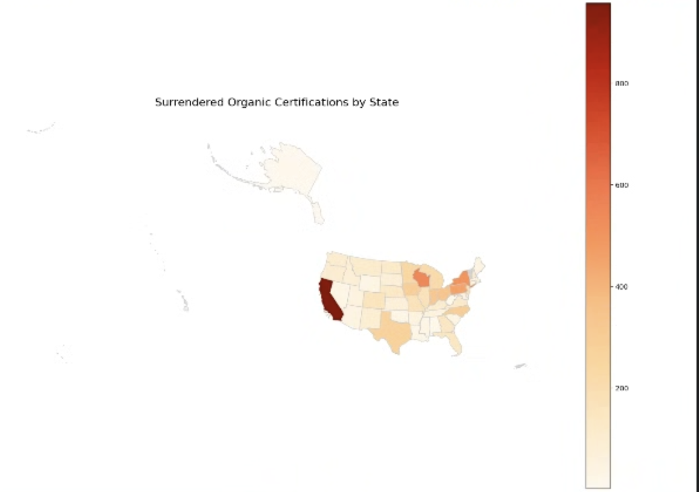

Organic Summary Project
Steps of the project:
Summary statistics run on Integrity Database for majority of columns, such as acreage

Timeline created of certification status by year
Chloroform maps created using certification status timeline